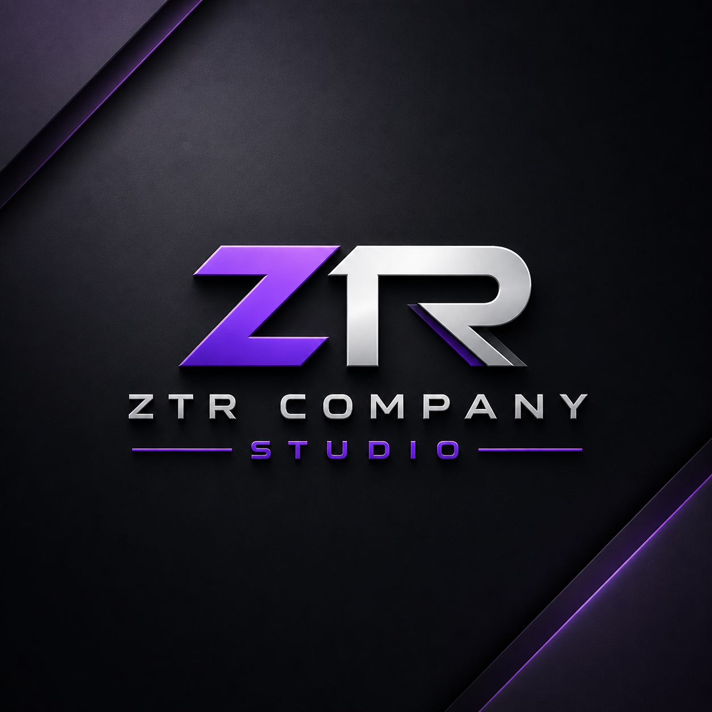

Offline + Online
Corrida acontece no jogo, mas os dados finais podem ser enviados para a web.

ZTR COMPANY STUDIOGame Development DivisionGAME PROJECT
Race Low Poly é um jogo de corrida offline com bots controlados por IA. Ao final das corridas, os resultados podem ser enviados para um dashboard online conectado ao banco de dados, formando ranking e histórico dos jogadores.
Corrida acontece no jogo, mas os dados finais podem ser enviados para a web.
Sistema de classificação para melhores tempos, jogadores e progresso.
Projeto sem loja interna, focado em corrida, progressão e dashboard.